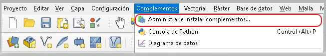
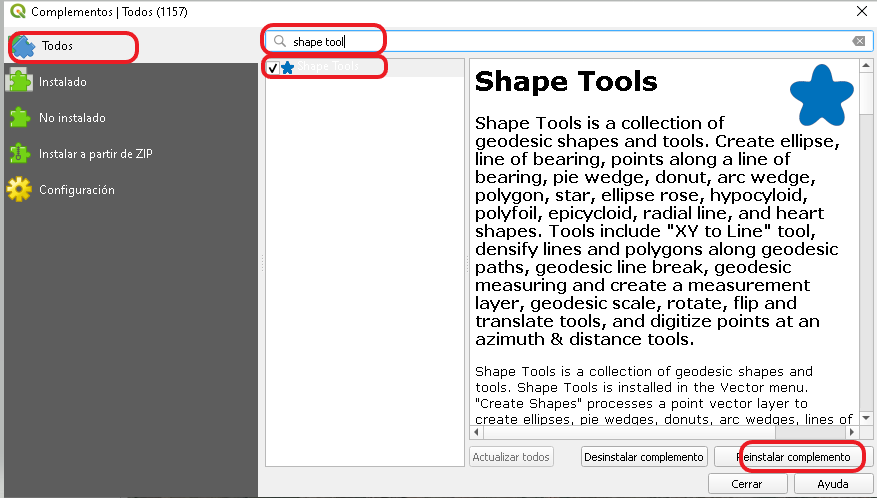
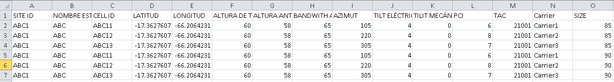

Crear sectores RF con mapa de fondo en QGIS
Publicado el: 2 de Agosto de 2022
Actualmente es necesario explotar la utilización de herramientas gratuitas de Sistema de información geográfica una de estas es QGIS, donde podemos graficar una red de manera sencilla, poder realizar visualizaciones de sus sectores y diferentes análisis que también se realizan en herramientas como Map info o ArGIs.
- Tener instalado QGIS, les comparte el enlace si no lo tiene instalado https://qgis.org/es/site/forusers/download.html.
- Instalar el complemento SHAPE TOOLS, se instala de la sigiente manera :
 
- Ingresar a ->Complemento -> Administrador e instalador de complementos -> “Buscar el complemento shape Tools” -> Instalar complemento.
- Tendremos que qenerar una plantilla en CSV. por celda con los parámetros de nuestra red. Esta tabla estara compuesta por los siguientes campos o culmnas :

- SITE ID,NOMBRE ESTACIÓN, CELL ID, LATITUD, LONGITUD, ALTURA DE TORRE[M], ALTURA ANTENA - AGL, BANDWITH ANTENA ,AZIMUT, TILT ELÉCTRICO, TILIT MECÁNICO, PCI, AC, Carrier, SIZE Nota :. En caso de cargar más portadoras en una Tecnología sugiero agregar un campo de tamaño de celda para su visualización, en nuestro template adjunto lo denominaremos “SIZE”. También pueden agregar mayor cantidad de columnas a su necesidad los mismo pueden ser parámetros, KPIs, inventario o cualquier información que consideren de utilidad. A continuacion mostrare el cargado del este .CSV
->1. Texto delimitado-> 2.Nombre de archivo” buscar dirección de carpeta del .csv” -> 2.1. Codificación “ LATINO1” “ este punto opcional para reconoces caracteres especiales del lenguaje en este caso “Ñ” -> 3.Formato de archivo” seleccionar (; o ,) de acuerdo a la configuración separador decimal de su Widows o Mac. ->4.Definición de Geometría “seleccionar coordenada del punto y los campos latitud y longitud del documento .csv.” ->5.SRC de la geometría “seleccionar WGS 84”-> 6.verificar que la tabla se representada correctamente-> Añadir -> Cerrar Verifiquen se carguen los puntos de sus radio bases. En caso que no visualice como punto su tabla csv, “Deberán cambiar su configuración de separador de decimales de su computador como se muestra en la imagen."